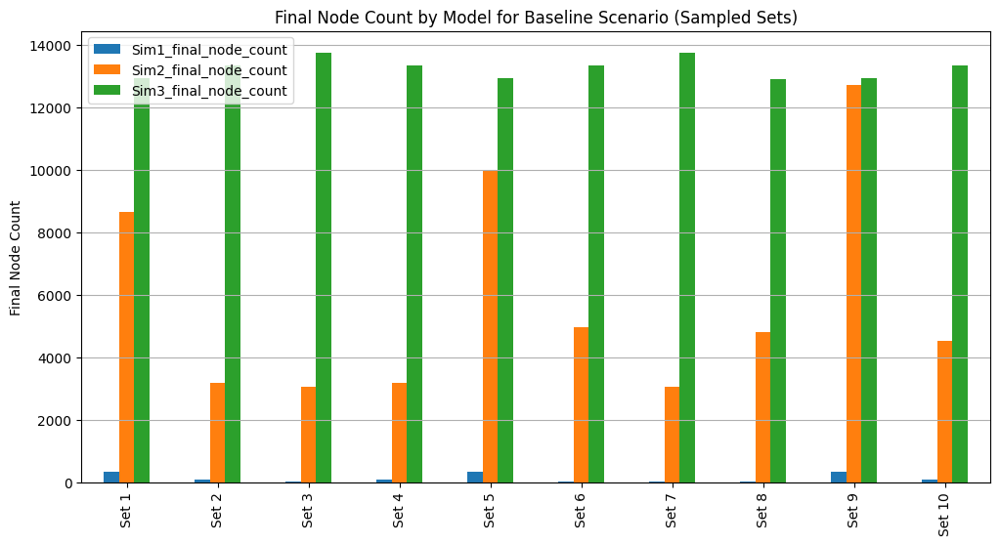
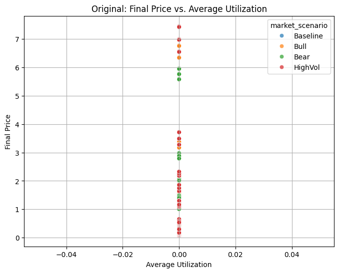
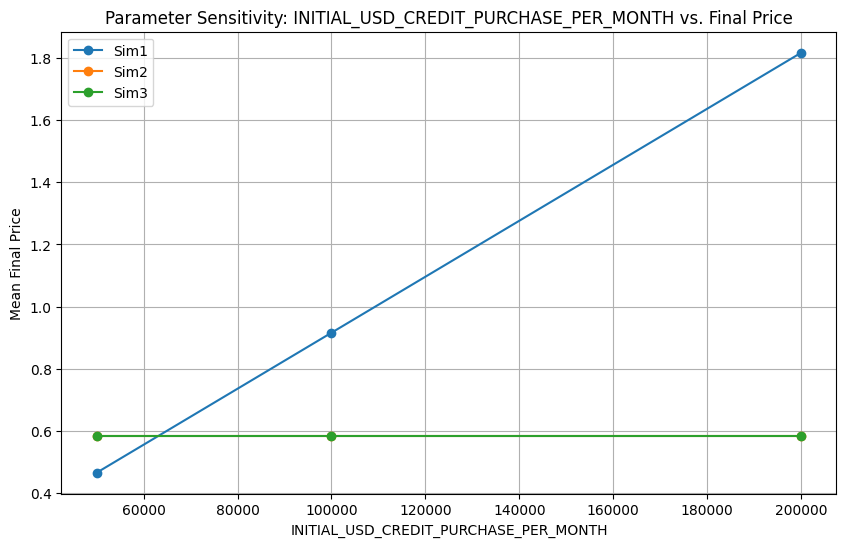
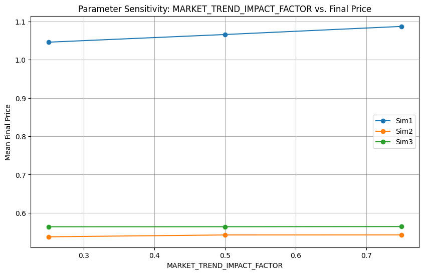

This report provides a clear, actionable comparison of three
tokenomics models for the Dria network. Each model was rigorously
simulated across a wide range of parameters and market scenarios
(Baseline, Bull, Bear, High Volatility) to assess performance,
stability, and risk. The goal is to inform stakeholders about the
trade-offs and suitability of each approach for Dria's future.
The models evaluated are: * Model Alpha (Sim1): The current design, emphasizing compute-linked emissions and
deflationary mechanisms. * Model Beta (Sim2): A research-backed alternative featuring a halving-based emission schedule,
performance-based rewards, and explicit governance structures. *
Model Gamma (BME | Sim3): A benchmark model designed to be highly responsive to broader
crypto market dynamics.
2. Tokenomics Model Overviews
2.1. Model Alpha (Sim1)
Core Idea: Rewards linked directly to network
activity and utility, with deflationary pressures from service
fees.
Supply & Emissions: Capped supply with
emissions primarily driven by compute demand and node
participation.
Key Features: Staking for yield, token burns from
service payments, value retention through locked credits.
Pros: Incentives directly tied to network usage,
inherent deflationary aspects, simpler to understand and
communicate.
Cons: Emission schedule can be less predictable
under fluctuating demand, lacks explicit treasury and advanced
governance mechanisms.
2.2. Model Beta (Sim2)
Core Idea: Predictable, Bitcoin-like emissions with
a halving mechanism, performance-based rewards for network contributors,
and a robust governance framework including a treasury.
Supply & Emissions: Capped supply with a
pre-defined emission schedule that halves every 4 years.
Key Features: Distinct roles for contributors and
validators, rewards based on uptime and FLOPs, dedicated treasury funded
by emissions and fees, token-based governance.
Pros: Transparent and predictable long-term
emission schedule, dedicated funding for ecosystem development, strong
incentive alignment for quality service.
Cons: More complex than Model Alpha, fixed emission
rate may not always perfectly align with short-term network growth or
contraction.
2.3. Model Gamma (BME | Sim3)
Core Idea: Token emissions and rewards are dynamically modulated by external market trends (e.g., overall crypto market, DePIN sector) and internal network demand. The design aims to create a dynamic equilibrium where, over time, the amount of DRIA burned from service fees could balance the amount of DRIA emitted as rewards, thereby stabilizing the token's price.
Supply & Emissions: Highly adaptive and
market-driven.
Key Features: Designed for maximum responsiveness
to external economic conditions.
Pros: Potential to capitalize on broad market
uptrends and self-adjust during downturns.
Cons: Inherently less predictable for long-term
financial planning, potential for higher volatility if market
correlations are strong and negative.
Weaknesses of Each Tokenomics Mechanism
Model Alpha (Sim1)
Emission Predictability: Emissions are closely tied to network activity and demand, which can fluctuate. This makes long-term supply and reward forecasting more difficult for both the team and participants.
Lack of Explicit Treasury/Governance: There is no built-in mechanism for ecosystem funding or on-chain governance, which can limit the protocol's ability to adapt, fund growth, or respond to crises.
Deflation Reliance: The model relies on deflationary mechanisms (burns) to counteract inflation, but if network usage drops, burns may be insufficient, leading to potential oversupply.
Staking Simplicity: While simple, the staking mechanism may not optimally align incentives for long-term engagement or high-quality contributions.
Resilience to Shocks: Although robust in many scenarios, the lack of adaptive levers (like a treasury or dynamic emissions) can make it less responsive to sudden market or demand shocks.
Model Beta (Sim2)
Complexity: The model introduces more moving parts (halving, performance-based rewards, explicit validator/contributor roles, treasury, governance), which can be harder to communicate, implement, and govern.
Fixed Emission Schedule: The halving schedule is predictable but inflexible. If network growth outpaces emissions, rewards may become too scarce; if growth lags, excess emissions could cause inflation.
Governance Risks: On-chain governance and treasury management require active, informed participation. Poor governance can lead to misallocation of funds or protocol capture by special interests.
Performance Metrics: Reliance on performance-based rewards (e.g., uptime, FLOPs) can be gamed or manipulated if not carefully designed and monitored.
Treasury Utilization: If the treasury is not used effectively, it can become a source of inefficiency or even a target for exploitation.
Model Gamma (BME | Sim3)
High Volatility: By design, emissions and rewards are highly sensitive to external market trends. This can lead to large swings in incentives, price, and network participation.
Unpredictability: The model's adaptability can make it difficult for participants to plan or for the protocol to maintain stability, especially in turbulent markets.
Potential for Overreaction: If market signals are noisy or manipulated, the protocol may overreact, amplifying booms and busts.
Lack of Long-Term Anchors: Without a fixed supply or emission schedule, there is less certainty for long-term holders and planners.
Complex Tuning Required: The model requires careful calibration of how much market trends influence emissions and demand, or it risks instability.
Simulation Settings
Your simulations were designed to robustly test each model under a wide range of conditions. Here are the key settings and approaches:
Parameter Sweeps: Simulations tested different starting network sizes, demand growth rates, initial prices, and market trend sensitivities.
Market Scenarios: Baseline (average), Bull (positive), Bear (negative), and High Volatility (large swings) scenarios were simulated.
Market Data Integration: Real historical crypto and DePIN sector data were used to generate realistic market trend indices, which modulated demand growth in the simulations.
Simulation Duration: Simulations typically ran for 5 or 10 years, with monthly timesteps.
Metrics Tracked: Final price, node count, APY, utilization, treasury balance, emissions, burns, failures (e.g., price < $0.10 or node count < 100), and more.
Robustness Testing: By sweeping across many parameter combinations and market scenarios, the simulations assessed not just average outcomes but also the frequency and nature of failures or extreme results.
3. Simulation Highlights
& Key Findings
Our simulations tested each model across numerous parameter
combinations and four distinct market scenarios.
Overall Price Performance & Potential:
Model Beta (Sim2) demonstrated the capacity for
higher peak prices, especially in favorable (Bull) market conditions,
but also exhibited a wider range of outcomes, including more significant
downside risk in adverse scenarios.
Model Alpha (Sim1) generally produced more
moderate and consistent price levels, showing less extreme highs and
lows.
Model Gamma (BME | Sim3) showed the most considerable
price fluctuations, directly reflecting its sensitivity to simulated
market trends.
Stability and Robustness:
Model Alpha (Sim1) consistently showed the
highest stability, with the tightest distribution of final prices across
varied scenarios. This indicates greater resilience to shocks and
parameter variations.
Model Beta (Sim2), while offering higher
upside, was more sensitive to initial conditions and market sentiment,
leading to greater variability in outcomes.
Model Gamma (BME | Sim3) was, by design, the most variable
in its price outcomes.
Performance Across Market Scenarios:
In Bull Market simulations, Model Beta (Sim2)
and Model Gamma (BME | Sim3) generally captured more upside potential.
In Bear Market simulations, Model Alpha (Sim1)
proved more defensive, maintaining value better than the more
market-sensitive alternatives.
High Volatility scenarios amplified the
characteristics of each model, with Model Alpha (Sim1) remaining
relatively more stable.
Risk of "Failure" (Defined as price < $0.10 or node count
< 100):
Model Beta (Sim2) and Model Gamma
(BME | Sim3) showed a higher number of instances where outcomes fell
into this "failure" category, particularly under Bear market conditions
or unfavorable parameter sets (e.g., low initial demand growth).
Model Alpha (Sim1) experienced fewer such
extreme negative outcomes, underscoring its robustness.
4. Visual Insights from
Simulations
The following charts, representative of those in the
/output directory, illustrate these key findings.
4.1. Final Price Distribution
by Model
This boxplot visualizes the range of final DRIA prices (USD) achieved
by each model across all simulated scenarios and parameter settings. A
shorter box and fewer outliers (dots) suggest more consistent and
predictable pricing.
Final Price Boxplot
4.2. Model
Robustness (Standard Deviation of Final Price)
This bar chart compares the standard deviation of the final DRIA
price for each model. A lower bar indicates less price dispersion and
thus greater stability and predictability over the range of tested
conditions.
Robustness: Std Dev of Final
Price
4.3. Mean Final Price by
Market Scenario
This chart displays the average final DRIA price for each model under
the different simulated market scenarios (Baseline, Bull, Bear, High
Volatility), highlighting their responsiveness to broader market
conditions.
For a simplified view, focusing on a typical "Baseline" market
scenario, key performance indicators conceptually compare as follows.
(Detailed CSVs in /output provide precise data across all
scenarios).
Metric
Model Alpha (Sim1)
Model Beta (Sim2)
Model Gamma (BME | Sim3)
Avg. Final Price (USD)
Moderate
Higher Potential
Highly Variable
Price Stability
High
Medium
Low
Avg. Final Node Count
Steady Growth
Potential High
Variable
Resilience to Low Demand
Medium-High
Medium
Low-Medium
(Note: This table is a conceptual illustration. For exact figures
and detailed breakdowns, please refer to the CSV files and full plot
sets in the /output directory, such as
final_price_summary_stats.csv and the per-scenario
results.)
5. Strategic
Considerations & Recommendations
The choice of tokenomics model is a critical strategic decision that
should align with Dria's specific goals, risk tolerance, and
developmental stage.
Model Alpha (Sim1):
Best Suited For: Situations prioritizing stability,
predictable growth, and resilience, especially in the early stages of
network development or where a conservative risk profile is
preferred.
Key Advantage: Robustness against adverse
conditions and simpler initial mechanics.
Considerations: May offer less aggressive upside
capture during strong bull markets compared to more dynamic models.
Model Beta (Sim2):
Best Suited For: Projects with ambitious growth
targets, a clear path to significant network demand, and the capacity
for active governance and treasury management. Better deployed when the
network has achieved some initial traction.
Key Advantage: Strong incentives for quality,
predictable long-term supply, and a mechanism for ecosystem
funding.
Considerations: Carries higher risk if demand
growth falters or in sustained bear markets. Complexity requires robust
community engagement and governance.
Model Gamma (BME | Sim3):
Best Suited For: Primarily as a research benchmark
or for experimental phases where understanding market correlation
effects is paramount.
Key Advantage: Maximum adaptability to external
market signals.
Considerations: Likely too unpredictable and
potentially volatile for a primary production environment without
substantial dampening mechanisms or further refinement.
Recommended Path Forward:
Review Simulation Outputs: Stakeholders should
examine the comprehensive simulation outputs (graphs, CSVs, tables) in
the /output directory to understand performance under
specific parameter sets and market conditions.
Align on Risk & Growth: Facilitate a strategic
discussion to align on the desired balance between growth potential and
risk tolerance.
Consider a Phased or Hybrid Approach: It may be
prudent to launch with a more stable model (like Model Alpha (Sim1))
and plan a future evolution to incorporate elements from Model Beta
(Sim2) as the network matures, governance structures solidify, and demand
becomes more established.
Develop Adaptive Strategies: Regardless of the
chosen model, identify key performance indicators (KPIs) from the
simulations. For Model Beta (Sim2), in particular, define strategies for
treasury deployment or parameter adjustments in response to real-world
deviations from simulated conditions.
6. Conclusion
These simulations provide a data-driven foundation for making an
informed decision on Dria's tokenomics. Model Alpha (Sim1) offers
stability, Model Beta (Sim2) offers higher growth potential with
managed risks, and Model Gamma (BME | Sim3) serves as a valuable,
market-sensitive benchmark. The optimal choice will balance Dria's
strategic ambitions with a realistic assessment of market conditions and
internal capacities.
This report is based on recent simulation data. All referenced
charts and detailed output files are located in the project's
/output directory.
Appendix: Key Visualizations

Fig 1: Final Node Count by Model (Baseline Scenario)Fig 2: Final Price by Model (Baseline Scenario)Fig 3: Frequency of Failure CasesFig 4: Final Price Distribution by Model (Boxplot)Fig 5: Final Price Distribution (Histogram - All Scenarios)Fig 6: Model Alpha (Sim1) - Final Price vs. Average APY

Fig 7: Model Alpha (Sim1) - Final Price vs. Average UtilizationFig 8: Model Beta (Sim2) - Final Price vs. Average UtilizationFig 9: Parameter Sensitivity - USD Demand Growth Rate vs. Final PriceFig 10: Parameter Sensitivity - Initial DRIA Payments vs. Final PriceFig 11: Parameter Sensitivity - Initial DRIA Price vs. Final PriceFig 12: Parameter Sensitivity - Initial Node Count vs. Final Price

Fig 13: Parameter Sensitivity - Initial USD Credit Purchase vs. Final Price

Fig 14: Parameter Sensitivity - Market Trend Impact Factor vs. Final PriceFig 15: Parameter Sensitivity - Simulation Years vs. Final PriceFig 16: Robustness - IQR of Final Price by ModelFig 17: Robustness - Standard Deviation of Final Price by ModelFig 18: Mean Final Price by Model and Market ScenarioFig 19: Final Price Distribution by Model and Market Scenario (Boxplot)